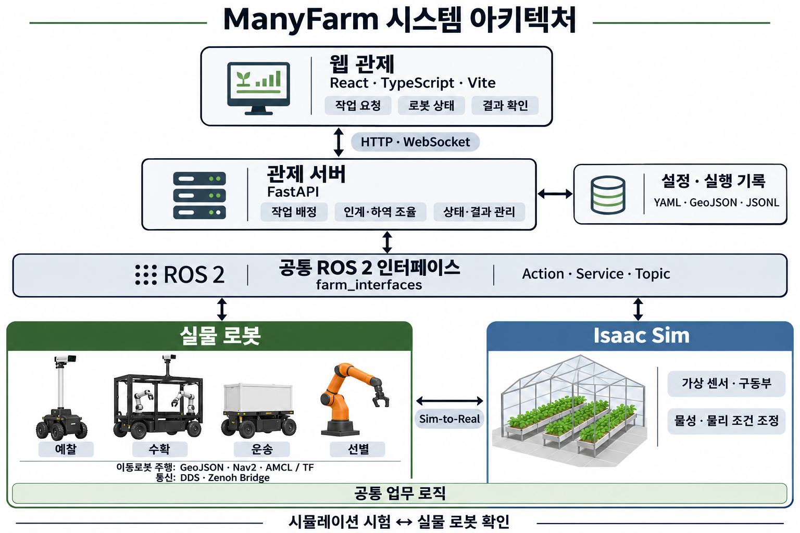
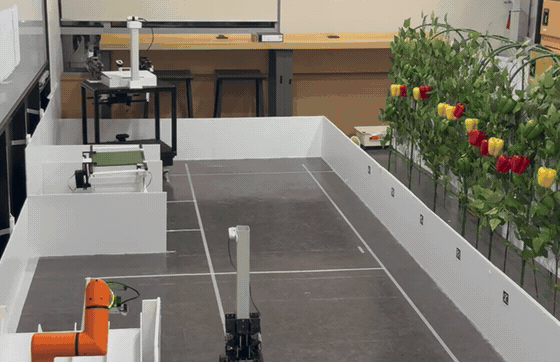
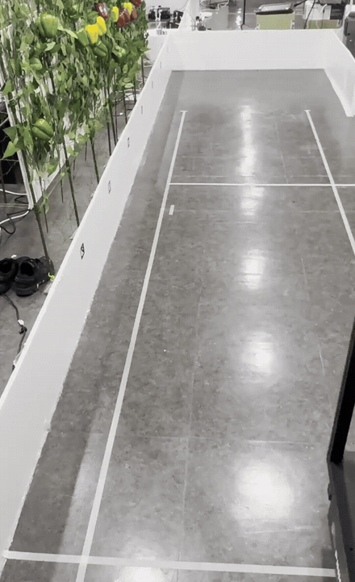
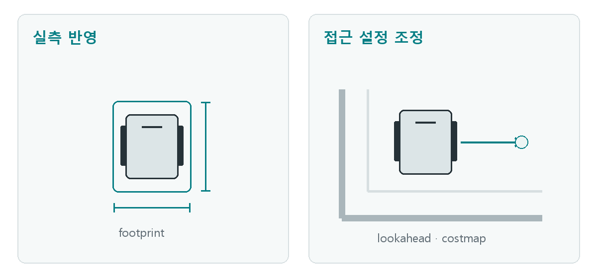
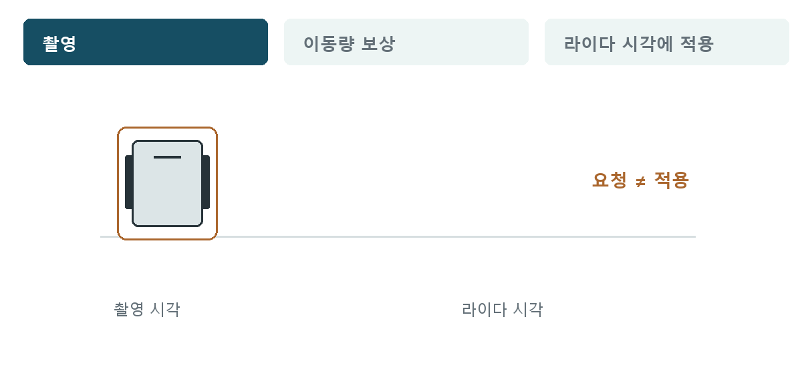
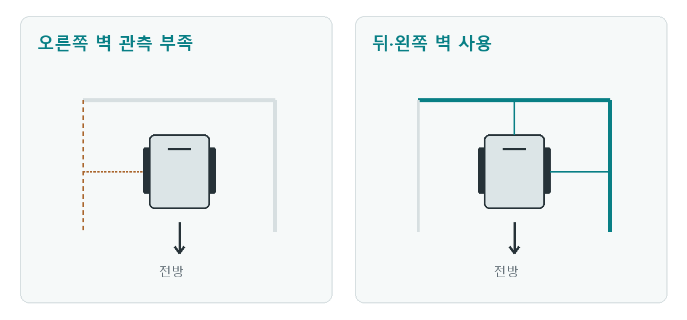

예찰
팀 담당 · 초기 설계 공동 참여
정지 관측
작업 영역·정차점 생성
ROBOTICS / SMART FARM
예찰·수확·운송·선별을 연결하는 7인 협업 프로젝트입니다. 수확로봇의 주행·위치 보정·관제 연동과 인계·복귀를 담당했습니다.


과실을 찾는 것에서 끝나지 않고, 수확 로봇이 어디에서 작업하고 운송 로봇이 언제 접근할지 연결해야 했습니다. 여러 로봇이 각자의 역할과 완료 조건에 따라 작업을 이어가도록 구성했습니다.
수확 차체의 코드 구조를 개편하고 주행·충돌 개선, AprilTag·AMCL 위치 보정을 구현했습니다. 관제·Jetson 연동과 인계·벽 정렬, 후진 복귀·두 벽 도킹을 연결했습니다.
팀 담당 · 초기 설계 공동 참여
정지 관측
작업 영역·정차점 생성
차체·연동 담당
주행·위치 보정
인계 자세·복귀
팔·Vision · 팀 담당
대상 재인식·팔 동작·수확
팀 담당
주행·도킹
인계·배출·복귀
팀 담당
과실 인식
색상별 분류

작업 요청 → 목표 주행·위치 보정 → 수확·인계 연동 → 복귀
외부 통신은 Communication, 작업 순서와 완료 조건은 Mission, 단계별 행동은 State, 전환과 실행 수명은 Controller가 맡도록 구조를 개편했습니다. State는 비동기 행동을 요청하고 반환하며, 완료 콜백을 받은 Controller가 다음 상태로 전환합니다.
Nav2 경로 추종 · 실물 차체 설정 조정 · AprilTag·AMCL 위치 보정


관제의 수확·인계·복귀 요청을 받고 진행과 결과를 보고하도록 연결했습니다. 차체의 실제 정지와 최신 팔 상태를 확인한 뒤 Jetson에 수확·배출을 요청합니다. 배출 Action 성공과 팔 접힘·정지·다음 작업 준비는 별도 조건으로 다뤘습니다.

수확 차체가 인계 진입·벽 정렬로 운송 접근 자세를 만들고, 도킹 이벤트를 확인한 뒤 배출을 요청하도록 연결했습니다. 운송 이격 후에는 후진 이탈·방향 조정·전진 복귀를 통해 작업 자세를 복구합니다.
운송로봇의 물리 접근과 Jetson 내부 장치 제어는 팀원 담당입니다.

복귀 전용 미션을 준비·후진 주행·도킹·정리로 나눴습니다. 뒤·왼쪽 벽의 관측으로 목표 자세를 구성하고 위치·방향 오차뿐 아니라 실제 정지와 정리 완료를 확인했습니다. 시뮬레이션의 후진 선행 작업과 이후 코드 개편·실물 적용을 구분합니다.
요구사항과 회의 결정, 작업 담당 및 일정을 정리했습니다. 각 파트의 요청·진행·완료 의미를 맞추고 통합시험 범위와 후속 항목을 조율했습니다.
공정 순서 설명용 · 실제 로봇·물리 검증과 구분
| 검증 구분 | 확인한 결과 | 시험 범위 |
|---|---|---|
| 관제·차체 연동 | 예찰 작업 생성 → 관제 요청 → 목표 주행 → 결과 수신 | 수확팔을 제외한 부분 통합 |
| 인계·작업 재개 | 첫 작업 구간 → 인계·벽 정렬 → 작업 자세 복구 → 다음 작업 구간 수행 | 실제 차체 + PC 더미 수확·인계 이벤트 |
| 실제 Jetson 배출 | 요청 수락 후 열기·배출·닫기 진행 상태와 완료 응답 수신 | 이동·운송 도킹 없이 배출 시험 모드 |
| 스테이션 복귀 | 후진 복귀·두 벽 도킹·정리 완료 | 팔 상태 생략 조건의 차체 시험 |
| 원본 실행본·관제 | 원본 실행본에서 실제 관제 복귀 요청의 성공 확인 | 성공 당시 코드·설정 및 시험 조건 기준 |
각 결과는 서로 다른 조건의 개별 시험이며, 실제 팔·운송을 포함한 전체 연속 공정의 성공률은 측정하지 않았습니다.
기록 재생 시험
재생 시험과 별도로 수행한 실물 주행 기록
설정 허용치 5mm·1°와 LiDAR 추정 잔차는 제어 기준이며, 절대 위치 정확도 측정값은 아닙니다.
NAV2 · COSTMAP · FOOTPRINT

작업 구간 코너에서 큰 회전 궤적과 충돌 판정에 따른 주행 중단이 발생했습니다.
실패 시점의 costmap과 footprint를 대조하고, 정지 후 간격만으로 잘못된 충돌이라고 단정하지 않았습니다. 차체 크기를 실측에 맞추고 접근 lookahead와 local costmap 해상도를 조정했습니다. 충돌 검사와 padding은 유지했습니다.
최종 설정과 당시 지도·출발 조건에서 지정 경로 2회 연속 성공을 확인했습니다. 개별 설정 하나의 효과를 분리한 대조시험은 아닙니다.
APRILTAG · TF · AMCL

태그 보정을 전달할 때 odom TF 시간 경고가 반복됐고, 요청 발행만으로 실제 적용을 확인하기 어려웠습니다.
카메라 관측 시각과 라이다 처리 시각 사이의 이동량, 요청과 적용의 대응 관계를 함께 다뤘습니다. 유효 라이다 시각까지 odom 이동량을 반영하는 수신부를 연결하고, 보정 요청·대기·실제 적용을 분리해 추적했습니다.
센서 기록 재생에서 요청·적용 12/12 및 태그 관련 경고 12→0을 확인했습니다. 별도 실물 주행에서는 요청·대기·적용 각 10건의 대응을 확인했습니다.
LiDAR · STATION DOCKING

스테이션 도킹에서 오른쪽 벽의 관측 지지율이 부족해 목표 자세 생성 전에 실패했습니다.
실측 외곽 간격과 라이다 기준 거리를 구분하고, 실패 기록에서 안정적으로 관측되는 벽을 확인했습니다. 뒤·왼쪽 두 벽을 기준으로 전환하고 실측 기준을 적용했습니다. 전체 스캔의 충돌 검사와 완료 허용치는 유지했습니다.
기록 재생에서 초기 안정화 이후 630개 목표 생성·관측 오류 0을 확인했습니다. 이후 팔 상태 생략 조건의 실물 차체 도킹에서 성공을 확인했습니다.
01 · 시스템 연동
요청이 수락된 것, 장치가 동작한 것, 다음 작업을 시작할 수 있는 것은 다른 상태였습니다. 각 단계의 완료 조건과 결과 보고를 맞추며 기능을 하나의 흐름으로 연결했습니다.
02 · 센서·제어
정지 후 사진만으로 실패 순간을 판단할 수 없었습니다. 센서 시각과 로그를 대조하고 실측 형상·관측 가능한 벽을 기준으로 제어 조건을 정리했습니다.
03 · 시험 기록
주행·인계·배출·복귀를 각각 시험하며, 구성요소와 실행 조건에 따라 성공의 의미가 달라짐을 배웠습니다. 시험 조건과 결과를 함께 기록했습니다.